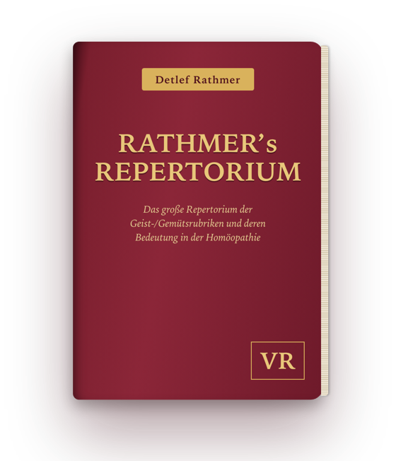
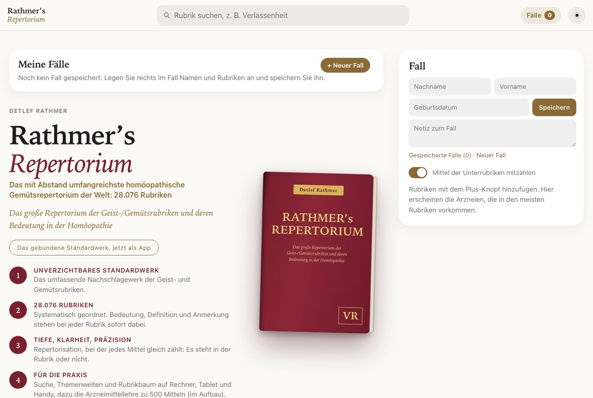
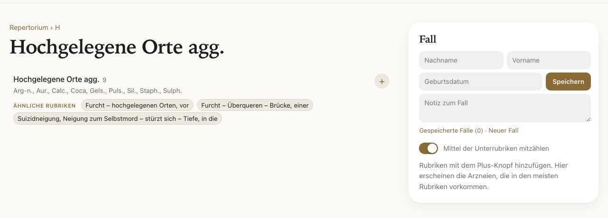
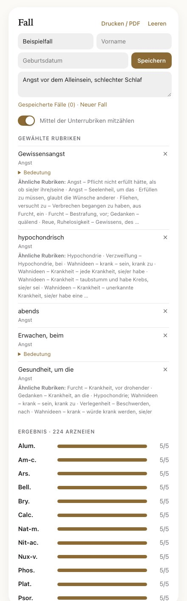

Die App für Homöopathen
Das mit Abstand umfangreichste homöopathische Gemütsrepertorium der Welt – jetzt als App für Rechner, Tablet und Handy.

28.076 Rubriken der Geist- und Gemütssymptome, jede mit Bedeutung, Definition und Anmerkung. Dazu Querverweise, eine Fallfunktion zum Repertorisieren und die Arzneimittellehre zu 500 Mitteln.
Einführungspreis € 119,50 für die ersten Monate, danach € 149,50. Einmalige Zahlung, kein Abo. Zugang ohne Ablaufdatum, Verfügbarkeit mindestens 5 Jahre garantiert.
28.076 Rubriken, systematisch geordnet. Nach Themenwelten, von A bis Z oder über die Suche in Sekunden gefunden.
Definition, Wortbedeutung und Anmerkung stehen direkt dabei. So wird klar, was eine Rubrik wirklich meint, bevor sie gewählt wird.
„Siehe unter“ und „Ähnliche Rubriken“ aus dem Buch sind anklickbar. Keine passende Rubrik mehr übersehen.
Rubriken wählen, die Arzneien erscheinen nach Häufigkeit. Fälle speichern, Name und Notizen ergänzen, als PDF drucken.
Aus den Rubriken zusammengestellt: kennzeichnende Rubriken, King-Pin-Symptome und alle Themenfelder je Mittel.
Auf Rechner, Tablet und Handy, hell oder dunkel. Auf den Home-Bildschirm legen und wie eine App öffnen.



In der Probe-Version sind fünf große Rubriken freigeschaltet: Angst, Traurigkeit, Zorn, Reizbarkeit und Weinen, mit allen Funktionen. Ohne Anmeldung, ohne Kosten.
Tipp: In Safari auf „Teilen“ → „Zum Home-Bildschirm“ tippen, dann öffnet sie sich wie eine App.
Das Repertorium ist ein Nachschlagewerk für Fachleute der Homöopathie und ersetzt keine ärztliche Diagnose oder Behandlung.